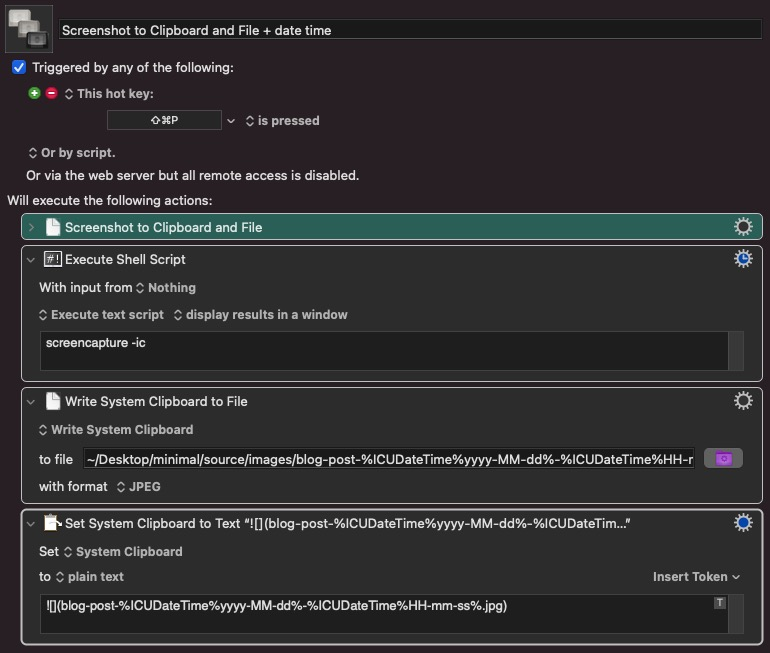

Day 2 of 100DaysOfCode
This was a little bit of a different experience compared to the first day, and that’s because I spent almost the entirety of my programming time on going and getting my blog live.
I have looked at countless content management systems in the past, but there was always an issue with whatever I was using.
WordPress felt far too clunky, and slow. Using a shared hosting plan for my blog meant having to sign into my host, get to cPanel, log into my admin account, write the post in their unintuitive editor. Basically, using WordPress added an extensive amount of time to each and every post I wrote.
This is where using something like Jekyll came in, but that also came with it’s own issues. I am not super interested in Ruby, which is what Jekyll is built on, and I always had issues with running anything Ruby related on my Mac. Granted, I’m a little bit of a dumb ass when it comes to this sort of stuff, but I feel like getting Jekyll started locally should have been a bit of an easier experience.
Looking around, I was able to find Hexo which is a static site generator built for blogging, like Jekyll, but it has been a million times easier to deploy compared to Jekyll.
Getting the website going is exciting, because I’ve been doing the vast majority of my work within the Terminal. The time you can save by avoiding your mouse altogether is impressive. I’ve been able to actually memorize a lot of the common Git commands super easily because they have to be used to get my blog posts online via Netlify.
Hexo has some features that I’ve really grown to appreciate, one of which is having a dedicated folder for assets that is created with each post, if you enable it in your settings. This allows me to keep my files well organized.
I’ve also done something pretty fun with Keyboard Maestro, if I hit Cmd + P, I will be able to take a screenshot of an area of my screen. Keyboard Maestro automatically saves the file in my images folder, and then adds a relative path to that file to my clipboard. I then drag the file over to that posts asset folder, and paste the link to my post.

These small scripts can save so much time, and it reminds me that I do not put enough time into Keyboard Maestro.
If anyone is interested in checking out Hexo, and deploying via Netlify, this tutorial was great: A Step-by-Step Guide: Hexo on Netlify.
Some useful things I came across today:
- Asset Folders in Hexo
- Keyboard Maestro Script for taking a screenshot and automatically saving it in a specific folder
- Submodule mapping in your git project, this fixed a deployment error on Netlify I was having, as I didn’t reference the source repository for files I had cloned into my repository.
Something that would be interesting to create is an application that keeps an eye out for new posts on my blog, and then publishes them to Peakd or LeoFinance depending on the tags used. Maybe someone else can chime in on just how realistic that is.